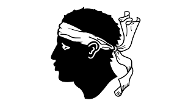

Corse, FranceL'un des chats rencontrés lors de mon séjour en Corse.
Avril 2023
Corse, les premières empreintes de Cœur Errant
À cette époque, Cœur Errant n'avait encore ni nom ni projet. Pourtant, sans le savoir, j'étais déjà en train d'en écrire les premières lignes.
Sur un parking près de mon camping et d'un supermarché, j'ai découvert de petites maisonnettes destinées aux chats errants, ainsi que quelques gamelles vides.
Lire mon récit de voyage
On m'avait expliqué que certains chats étaient abandonnés à cet endroit, notamment lors des départs en vacances. Au fil du temps, une trentaine de chats s'y étaient retrouvés.
J'ai alors commencé à leur acheter des croquettes, de la pâtée et du lait spécialement destiné aux chatons.
Chaque matin et chaque soir, je retournais les voir. Sans même m'en rendre compte, ces visites étaient devenues un véritable rituel.
Je m'asseyais auprès d'eux. Certains venaient se blottir sur mes genoux, d'autres s'installaient autour de moi. Lorsque je me levais pour marcher, ils me suivaient.
Ce simple parking était devenu l'un de mes endroits préférés de mes vacances.
Parmi tous ces chats, une petite chatte avait réussi à se faire une place encore plus particulière dans mon cœur. Je l'avais appelée Sushi.
Elle était entrée dans mon bungalow et avait partagé mes nuits durant mon séjour. J'avais même envisagé de la ramener avec moi en Belgique.
Malheureusement, les contraintes du retour en bateau et le peu de temps qu'il me restait rendaient les démarches trop compliquées.
Si j'avais pu, elle serait repartie avec moi.
À cette époque, je n'avais pas encore imaginé que mes futurs voyages seraient consacrés aux animaux errants. Je suivais simplement mon cœur.
C'est en Corse que les premières graines de Cœur Errant ont été semées. Et c'est à Tanger, un an plus tard, qu'elles ont véritablement commencé à grandir.
Avant même d'avoir un nom, Cœur Errant avait déjà une histoire.
 Tanger, Maroc
Tanger, Maroc

 Sicile, Italie
Sicile, Italie


 Macédoine du Nord
Macédoine du Nord
 Kosovo
Kosovo

 Albanie
Albanie
 Djerba, Tunisie
Djerba, Tunisie